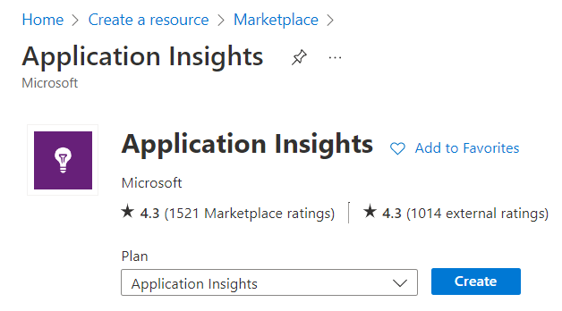
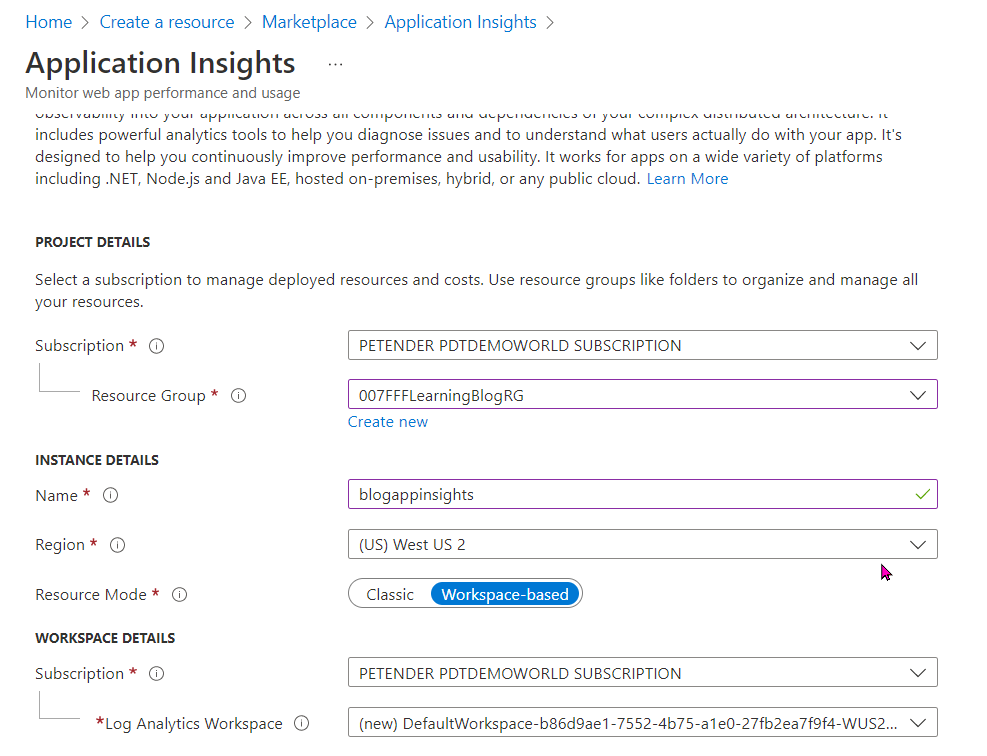
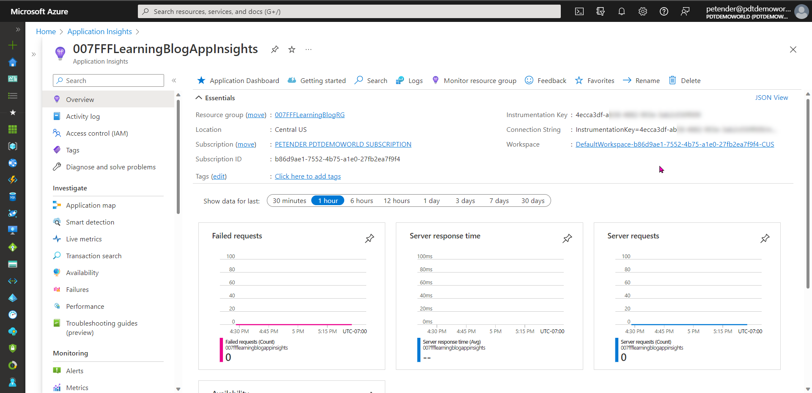
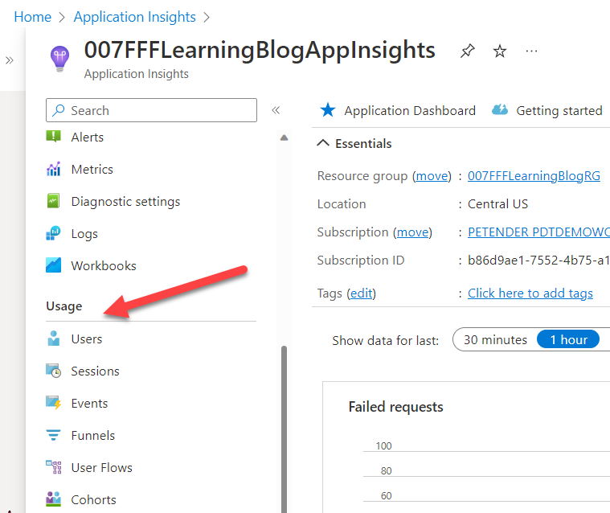
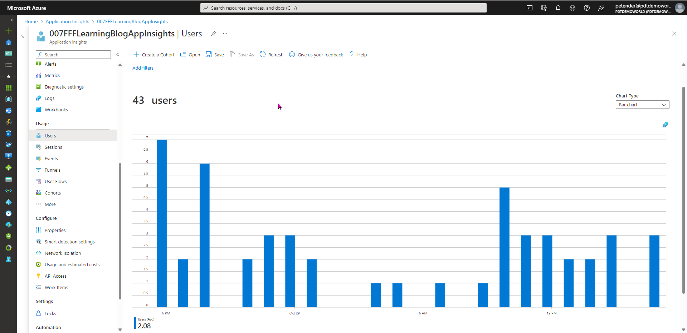
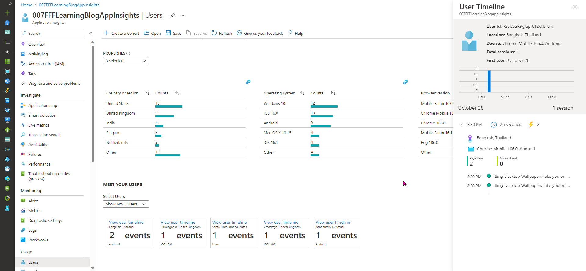

Hey folks,
Earlier this week, I wrote about how I migrated my Hugo blog site from Azure Storage Account-based site to the newer Azure Static Web Apps with Hugo.
While this was a smooth process, both migrating the actual site content, as well as transferring the public domain name, the piece missing was the statistics. I always used Azure Application Insights for this, but specifically for Azure Static Web Apps, App Insights is only supported when using Functions (as per this article on the Microsoft docs). Which I don’t have with Hugo.
However, App Insights also supports a JavaScript-based approach, and this works fine with Hugo static website.
Let’s get this going…
- The first step involves deploying an Azure Application Insights resource from the portal.

- Enter the necessary details to get your App Insights resource deployed:
- Subscription
- Resource Group
- App Insights Instance Name
- Region
- Resource-Mode Workspace-based
- Log Analytics WorkSpace: accept the suggested one (or select an existing one if you already have one and want to consolidate the logging information)

- After a few minutes, the resource got created successfully. Navigate to the blade

- From the blade, notice the Instrumentation Key in the top right corner. Copy this key aside, as you need to add it into the Hugo config file.
With App Insights up-and-running, let’s head over to our Hugo site source files. Look for a file “config.toml” in the root of your Hugo folder structure. Open the file in an editor, and add the following snippet into the “[param]” section of the config file:
azureAppInsightsKey = "4ecca3df-ab58-4882-aaaa-123456789"
replacing the sample key with the Instrumentation Key of your Azure Application Insights resource you copied earlier.
- Next, to make sure your App Insights statistics get captured for every visit of every page of the site, add a little snippet of code for appinsights to the top section of the baseof.html file, which should be in the \themes<theme>\layouts_default\ folder of the Hugo Theme you are using.
<!DOCTYPE html>
<html lang="{{ .Site.LanguageCode }}">
{{ partial "appinsights.html" . }} <========= add this line
{{ partial "head.html" . }}
{{ partial "nav.html" . }}
<!-- Page Header -->
{{ block "header" .}}
...
- Next, create a new file called appinsights.html in the \themes<theme>\layouts\partials\ folder of the Hugo Theme you are using, having the following code in it:
{{ if .Site.Params.azureAppInsightsKey }}
<script type="text/javascript">
!function(T,l,y){var S=T.location,u="script",k="instrumentationKey",D="ingestionendpoint",C="disableExceptionTracking",E="ai.device.",I="toLowerCase",b="crossOrigin",w="POST",e="appInsightsSDK",t=y.name||"appInsights";(y.name||T[e])&&(T[e]=t);var n=T[t]||function(d){var g=!1,f=!1,m={initialize:!0,queue:[],sv:"4",version:2,config:d};function v(e,t){var n={},a="Browser";return n[E+"id"]=a[I](),n[E+"type"]=a,n["ai.operation.name"]=S&&S.pathname||"_unknown_",n["ai.internal.sdkVersion"]="javascript:snippet_"+(m.sv||m.version),{time:function(){var e=new Date;function t(e){var t=""+e;return 1===t.length&&(t="0"+t),t}return e.getUTCFullYear()+"-"+t(1+e.getUTCMonth())+"-"+t(e.getUTCDate())+"T"+t(e.getUTCHours())+":"+t(e.getUTCMinutes())+":"+t(e.getUTCSeconds())+"."+((e.getUTCMilliseconds()/1e3).toFixed(3)+"").slice(2,5)+"Z"}(),iKey:e,name:"Microsoft.ApplicationInsights."+e.replace(/-/g,"")+"."+t,sampleRate:100,tags:n,data:{baseData:{ver:2}}}}var h=d.url||y.src;if(h){function a(e){var t,n,a,i,r,o,s,c,p,l,u;g=!0,m.queue=[],f||(f=!0,t=h,s=function(){var e={},t=d.connectionString;if(t)for(var n=t.split(";"),a=0;a<n.length;a++){var i=n[a].split("=");2===i.length&&(e[i[0][I]()]=i[1])}if(!e[D]){var r=e.endpointsuffix,o=r?e.location:null;e[D]="https://"+(o?o+".":"")+"dc."+(r||"services.visualstudio.com")}return e}(),c=s[k]||d[k]||"",p=s[D],l=p?p+"/v2/track":config.endpointUrl,(u=[]).push((n="SDK LOAD Failure: Failed to load Application Insights SDK script (See stack for details)",a=t,i=l,(o=(r=v(c,"Exception")).data).baseType="ExceptionData",o.baseData.exceptions=[{typeName:"SDKLoadFailed",message:n.replace(/\./g,"-"),hasFullStack:!1,stack:n+"\nSnippet failed to load ["+a+"] -- Telemetry is disabled\nHelp Link: https://go.microsoft.com/fwlink/?linkid=2128109\nHost: "+(S&&S.pathname||"_unknown_")+"\nEndpoint: "+i,parsedStack:[]}],r)),u.push(function(e,t,n,a){var i=v(c,"Message"),r=i.data;r.baseType="MessageData";var o=r.baseData;return o.message='AI (Internal): 99 message:"'+("SDK LOAD Failure: Failed to load Application Insights SDK script (See stack for details) ("+n+")").replace(/\"/g,"")+'"',o.properties={endpoint:a},i}(0,0,t,l)),function(e,t){if(JSON){var n=T.fetch;if(n&&!y.useXhr)n(t,{method:w,body:JSON.stringify(e),mode:"cors"});else if(XMLHttpRequest){var a=new XMLHttpRequest;a.open(w,t),a.setRequestHeader("Content-type","application/json"),a.send(JSON.stringify(e))}}}(u,l))}function i(e,t){f||setTimeout(function(){!t&&m.core||a()},500)}var e=function(){var n=l.createElement(u);n.src=h;var e=y[b];return!e&&""!==e||"undefined"==n[b]||(n[b]=e),n.onload=i,n.onerror=a,n.onreadystatechange=function(e,t){"loaded"!==n.readyState&&"complete"!==n.readyState||i(0,t)},n}();y.ld<0?l.getElementsByTagName("head")[0].appendChild(e):setTimeout(function(){l.getElementsByTagName(u)[0].parentNode.appendChild(e)},y.ld||0)}try{m.cookie=l.cookie}catch(p){}function t(e){for(;e.length;)!function(t){m[t]=function(){var e=arguments;g||m.queue.push(function(){m[t].apply(m,e)})}}(e.pop())}var n="track",r="TrackPage",o="TrackEvent";t([n+"Event",n+"PageView",n+"Exception",n+"Trace",n+"DependencyData",n+"Metric",n+"PageViewPerformance","start"+r,"stop"+r,"start"+o,"stop"+o,"addTelemetryInitializer","setAuthenticatedUserContext","clearAuthenticatedUserContext","flush"]),m.SeverityLevel={Verbose:0,Information:1,Warning:2,Error:3,Critical:4};var s=(d.extensionConfig||{}).ApplicationInsightsAnalytics||{};if(!0!==d[C]&&!0!==s[C]){method="onerror",t(["_"+method]);var c=T[method];T[method]=function(e,t,n,a,i){var r=c&&c(e,t,n,a,i);return!0!==r&&m["_"+method]({message:e,url:t,lineNumber:n,columnNumber:a,error:i}),r},d.autoExceptionInstrumented=!0}return m}(y.cfg);(T[t]=n).queue&&0===n.queue.length&&n.trackPageView({})}(window,document,{
src: "https://az416426.vo.msecnd.net/scripts/b/ai.2.min.js", // The SDK URL Source
//name: "appInsights", // Global SDK Instance name defaults to "appInsights" when not supplied
//ld: 0, // Defines the load delay (in ms) before attempting to load the sdk. -1 = block page load and add to head. (default) = 0ms load after timeout,
//useXhr: 1, // Use XHR instead of fetch to report failures (if available),
//crossOrigin: "anonymous", // When supplied this will add the provided value as the cross origin attribute on the script tag
cfg: { // Application Insights Configuration
instrumentationKey: "{{- .Site.Params.azureAppInsightsKey -}}"
/* ...Other Configuration Options... */
}});
</script>
{{ end }}
-
Save the files and wait for the Static Web Apps pipeline to complete the update successfully.
-
Navigate to your blog website, and open a few different articles, shortlinks to other parts in the web site or navigate back-and-forth to the home page. This to generate some statistics information.
-
After only a few minutes, your App Insights data will get loaded, which can be retrieved from App Insights / Usage / section, using different views:

For example, select Users, which shows the number of unique visitors over the last 24 hours (note you can drill down to the last 30min, up to any custom period in time).

Click on the View More Insights button below the chart, which will expose even more granular information regarding the visits. For example the location, time frame, client, browser version, etc… all the way to the full sequence of blog articles visited.

In this article, I explained how to integrate Azure App Insights into a Hugo-based Azure Static Web Apps, using some JavaScript and HTML code.
If you are running Hugo on Azure SWA as well, let me know!

Cheers!!
/Peter